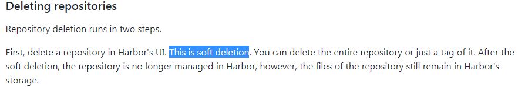

TOC
记录下在harbor中物理删除不要的镜像
参考：harbor的用户指南
物理删除harbor中不要的镜像

在harbor的UI端删除镜像的操作是逻辑删除的,需要物理删除不要的镜像达到释放空间的目的,是需要将harbor停下来再删除的。 步骤如下：
查看harbor相关镜像的名称
[root@master harbor]# docker images
REPOSITORY TAG IMAGE ID CREATED SIZE
ubuntu latest 93fd78260bd1 3 weeks ago 86.2MB
debian stretch 4879790bd60d 3 weeks ago 101MB
jenkins/jenkins lts-alpine bcc31d32159f 4 weeks ago 221MB
centos latest 75835a67d134 2 months ago 200MB
vmware/redis-photon v1.5.0 7c03076402d9 7 months ago 207MB
vmware/clair-photon v2.0.1-v1.5.0 7ae4e0670a3f 7 months ago 301MB
vmware/notary-server-photon v0.5.1-v1.5.0 0b2b23300552 7 months ago 211MB
vmware/notary-signer-photon v0.5.1-v1.5.0 67c41b4a1283 7 months ago 209MB
vmware/registry-photon v2.6.2-v1.5.0 3059f44f4b9a 7 months ago 198MB
vmware/nginx-photon v1.5.0 e100456182fc 7 months ago 135MB
vmware/harbor-log v1.5.0 62bb6b8350d9 7 months ago 200MB
vmware/harbor-jobservice v1.5.0 aca9fd2e867f 7 months ago 194MB
vmware/harbor-ui v1.5.0 1055166068d0 7 months ago 212MB
vmware/harbor-adminserver v1.5.0 019bc4544829 7 months ago 183MB
vmware/harbor-db v1.5.0 82354dcf564f 7 months ago 526MB
vmware/mariadb-photon v1.5.0 403e7e656499 7 months ago 526MB
vmware/postgresql-photon v1.5.0 35c891dea9cf 7 months ago 221MB
vmware/harbor-migrator v1.5.0 466c57ab0dc3 7 months ago 1.16GB
vmware/photon 1.0 4b481ecbef2a 7 months ago 130MB
注意:我们接下来将用到的镜像是vmware/registry-photon:v2.6.2-v1.5.0
停止harbor
[root@master harbor]# docker-compose stop
Stopping nginx ... done
Stopping harbor-jobservice ... done
Stopping harbor-ui ... done
Stopping registry ... done
Stopping harbor-adminserver ... done
Stopping harbor-db ... done
Stopping redis ... done
Stopping harbor-log ... done
物理删除
docker run -it --name gc --rm --volumes-from registry vmware/registry-photon:v2.6.2-v1.5.0 garbage-collect /etc/registry/config.yml
注意,如果只想看下会删除哪些镜像而不是真正的去删除,则需要加上选项--dry-run
如下:
docker run -it --name gc --rm --volumes-from registry vmware/registry-photon:v2.6.2-v1.5.0 garbage-collect --dry-run /etc/registry/config.yml
启动harbor
[root@master harbor]# docker-compose up -d
Creating network "harbor_harbor" with the default driver
Creating harbor-log ... done
Creating registry ... done
Creating harbor-adminserver ... done
Creating redis ... done
Creating harbor-db ... done
Creating harbor-ui ... done
Creating harbor-jobservice ... done
Creating nginx ... done
[root@master harbor]# docker-compose ps
Name Command State Ports
-------------------------------------------------------------------------------------------------------------------------------------------------
harbor-adminserver /harbor/start.sh Up (health: starting)
harbor-db /usr/local/bin/docker-entr ... Up (health: starting) 3306/tcp
harbor-jobservice /harbor/start.sh Up
harbor-log /bin/sh -c /usr/local/bin/ ... Up (health: starting) 127.0.0.1:1514->10514/tcp
harbor-ui /harbor/start.sh Up (health: starting)
nginx nginx -g daemon off; Up (health: starting) 0.0.0.0:8443->443/tcp, 0.0.0.0:4443->4443/tcp, 0.0.0.0:8888->80/tcp
redis docker-entrypoint.sh redis ... Up 6379/tcp
registry /entrypoint.sh serve /etc/ ... Up (health: starting) 5000/tcp
再次查看空间
df -h /harbor的初始化目录